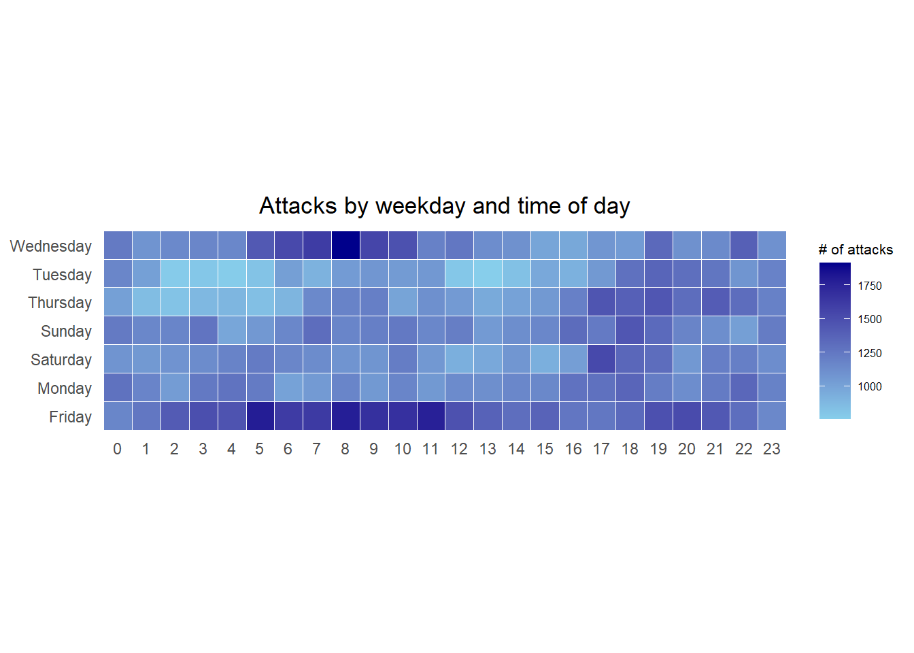
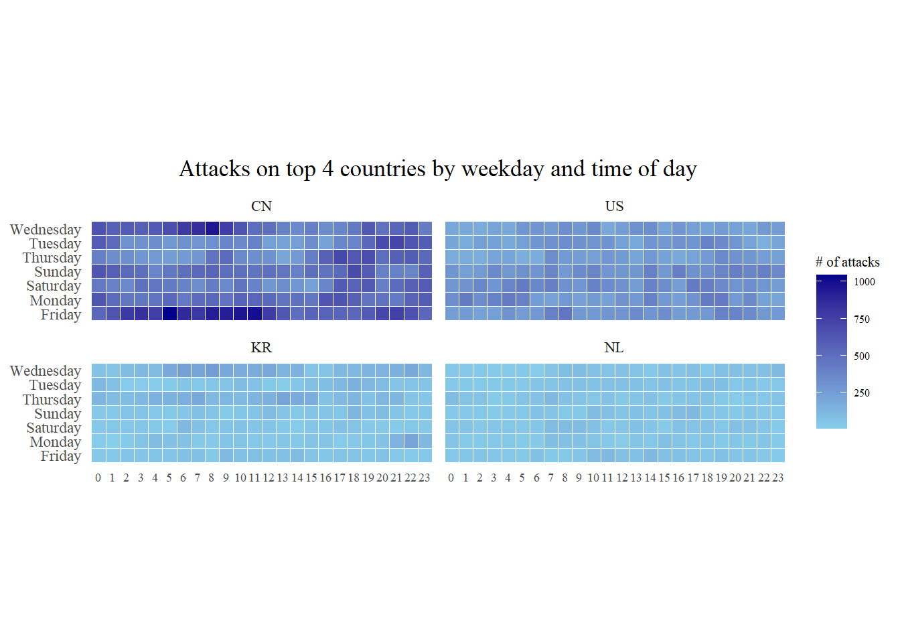
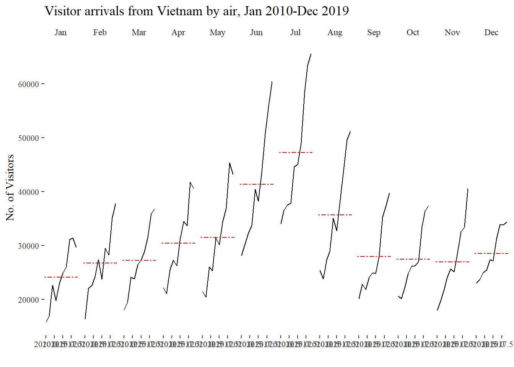

pacman::p_load(scales, viridis, lubridate, ggthemes, gridExtra, readxl, knitr, data.table, CGPfunctions, ggHoriPlot, tidyverse) Hands-on Exercise 6: Visualising and Analysing Time-oriented Data
1 Getting Started
1.1 Install and loading R packages.
1.2 Importing the data
There are three columns, namely timestamp, source_country and tz.
timestamp field stores date-time values in POSIXct format.
source_country field stores the source of the attack. It is in ISO 3166-1 alpha-2 country code.
tz field stores time zone of the source IP address.
Click to view the code.
attacks <- read_csv("../../data/eventlog.csv")
kable(head(attacks))| timestamp | source_country | tz |
|---|---|---|
| 2015-03-12 15:59:16 | CN | Asia/Shanghai |
| 2015-03-12 16:00:48 | FR | Europe/Paris |
| 2015-03-12 16:02:26 | CN | Asia/Shanghai |
| 2015-03-12 16:02:38 | US | America/Chicago |
| 2015-03-12 16:03:22 | CN | Asia/Shanghai |
| 2015-03-12 16:03:45 | CN | Asia/Shanghai |
2 Plotting Calendar Heatmap
2.1 Processing data before making heatmap
In order to plot heatmap, we need to process for the useful data.
Before we can plot the calender heatmap, two new fields namely wkday and hour need to be derived. In this step, we will write a function to perform the task.
Step 1: Define a function: for deriving weekday and hour from timestamps
weekdays()is a base R function.
Step 2: Apply function to the data and change the data type
Click to view the code.
#apply function to derive wkday and hour from timestamp
processed_attacks <- attacks %>%
do(make_hr_wkday(.$timestamp, .$source_country, .$tz))
# Change the Chinese weekday name(default came out in my computer) to English weekday name
chinese_weekdays <- c("星期一", "星期二", "星期三", "星期四", "星期五", "星期六", "星期日")
english_weekdays <- c("Monday", "Tuesday", "Wednesday", "Thursday", "Friday", "Saturday", "Sunday")
english_wkday <- english_weekdays[match(processed_attacks$wkday, chinese_weekdays)]
processed_attacks$wkday <- english_wkday
#Change the data type of wkday and hour to "fac" (and also with adding "tz" to processed_attacks and sorting by tz)
processed_attacks <- bind_cols(tz = attacks$tz, processed_attacks) %>%
mutate(wkday = factor(wkday),
hour = factor(hour)) %>%
arrange(tz)
# rename processed_attacks with attacks
assign("attacks", processed_attacks)
#Check the data frame
kable(head(attacks))| tz | source_country | wkday | hour |
|---|---|---|---|
| Africa/Cairo | BG | Saturday | 20 |
| Africa/Cairo | TW | Sunday | 6 |
| Africa/Cairo | TW | Sunday | 8 |
| Africa/Cairo | CN | Sunday | 11 |
| Africa/Cairo | US | Sunday | 15 |
| Africa/Cairo | CA | Monday | 11 |
Beside extracting the necessary data into attacks data frame, mutate() of dplyr package is used to convert wkday and hour fields into factor so they’ll be ordered when plotting.
2.2 Making heatmap
The below heatmap chart is made by ggplot2 package: geom_tile()
Click to view the code.
#Code for making heatmap
grouped <- attacks %>%
count(wkday, hour) %>%
ungroup() %>%
na.omit() #delete columns which has "NA"
ggplot(grouped,
aes(hour,
wkday,
fill = n)) +
geom_tile(color = "white", #this is for making heatmap
size = 0.1) +
theme_tufte(base_family = "Calibri") +
coord_equal() +
scale_fill_gradient(name = "# of attacks",
low = "sky blue",
high = "dark blue") +
labs(x = NULL, #"Hour in Day"
y = NULL, #"Weekday"
title = "Attacks by weekday and time of day") +
theme(axis.ticks = element_blank(),
plot.title = element_text(hjust = 0.5),
legend.title = element_text(size = 8),
legend.text = element_text(size = 6)
)
Things to learn from the code chunk
a tibble data table called grouped is derived by aggregating the attack by wkday and hour fields.
a new field called n is derived by using group_by() and count() functions.
na.omit() is used to exclude missing value.
geom_tile() is used to plot tiles (grids) at each x and y position. color and size arguments are used to specify the border color and line size of the tiles.
theme_tufte() of ggthemes package is used to remove unnecessary chart junk. To learn which visual components of default ggplot2 have been excluded, you are encouraged to comment out this line to examine the default plot.
coord_equal() is used to ensure the plot will have an aspect ratio of 1:1.
scale_fill_gradient() function is used to creates a two colour gradient (low-high).
Then we can simply group the count by hour and wkday and plot it, since we know that we have values for every combination there’s no need to further preprocess the data.
2.3 Building Multiple Heatmaps
Challenge: Building multiple heatmaps for the top four countries with the highest number of attacks.
Step 1: Deriving attack by country
In order to identify the top 4 countries with the highest number of attacks, you are required to do the followings:
- count the number of attacks by country,
- calculate the percent of attacks by country, and
- save the results in a tibble data frame.
Click to view the code.
attacks_by_country <- count(
attacks, source_country) %>%
mutate(percent = percent(n/sum(n))) %>%
arrange(desc(n))Step 2: Preparing the tidy data frame
In this step, you are required to extract the attack records of the top 4 countries from attacks data frame and save the data in a new tibble data frame (i.e. top4_attacks).
Step 3: Plotting the Multiple Calender Heatmap by using ggplot2 package.
Click to view the code.
ggplot(top4_attacks,
aes(hour,
wkday,
fill = n)) +
geom_tile(color = "white",
size = 0.1) +
theme_tufte() +
coord_equal() +
scale_fill_gradient(name = "# of attacks",
low = "sky blue",
high = "dark blue") +
facet_wrap(~source_country, ncol = 2) +
labs(x = NULL, y = NULL,
title = "Attacks on top 4 countries by weekday and time of day") +
theme(axis.ticks = element_blank(),
axis.text.x = element_text(size = 7),
plot.title = element_text(hjust = 0.5),
legend.title = element_text(size = 8),
legend.text = element_text(size = 6) )
3 Plotting Cycle Plot
In this section, learning how to plot a cycle plot showing the time-series patterns and trend of visitor arrivals from Vietnam programmatically by using ggplot2 functions.
Step 1: Data Import
air <- read_excel("../../data/arrivals_by_air.xlsx")Step 2: Deriving month and year fields
Click to view the code.
air$month <- factor(month(air$`Month-Year`),
levels=1:12,
labels=month.abb,
ordered=TRUE)
air$year <- year(ymd(air$`Month-Year`))Step 3: Extracting the target country
Click to view the code.
Vietnam <- air %>%
select(`Vietnam`,
month,
year) %>%
filter(year >= 2010)Step 4: Computing year average arrivals by month
Click to view the code.
hline.data <- Vietnam %>%
group_by(month) %>%
summarise(avgvalue = mean(`Vietnam`))Step 5: Plotting the cycle plot
Click to view the code.
Vietnam_visitors_plot <- ggplot() +
geom_line(data=Vietnam,
aes(x=year,
y=`Vietnam`,
group=month),
colour="black") +
geom_hline(aes(yintercept=avgvalue),
data=hline.data,
linetype=6,
colour="red",
size=0.5) +
facet_grid(~month) +
labs(axis.text.x = element_blank(),
title = "Visitor arrivals from Vietnam by air, Jan 2010-Dec 2019") +
xlab("") +
ylab("No. of Visitors") +
theme_tufte()
Vietnam_visitors_plot
4 Plotting Slopegraph
In this section you will learn how to plot a slopegraph by using R. Before getting start, make sure that CGPfunctions has been installed and loaded onto R environment. Then, refer to Using newggslopegraph to learn more about the function. Lastly, read more about newggslopegraph() and its arguments by referring to this link.
Step 1: Data Import
rice <- read_csv("../../data/rice.csv")Step 2: Plotting the slopegraph
Click to view the code.

Things to learn from the code chunk
For effective data visualisation design, factor() is used convert the value type of Year field from numeric to factor.